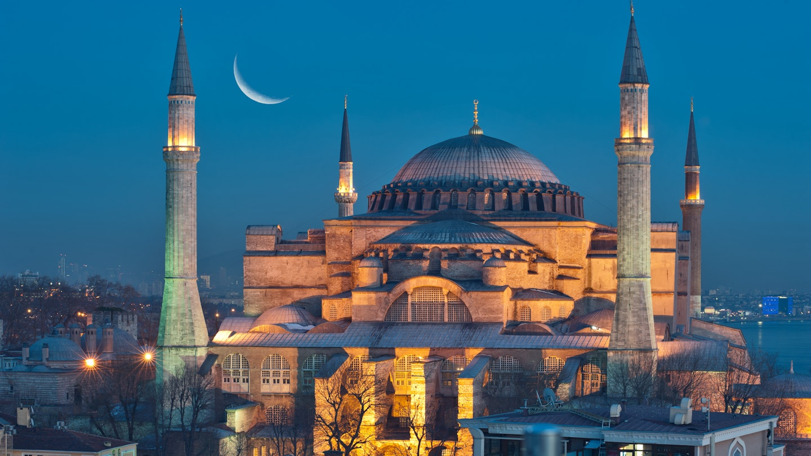
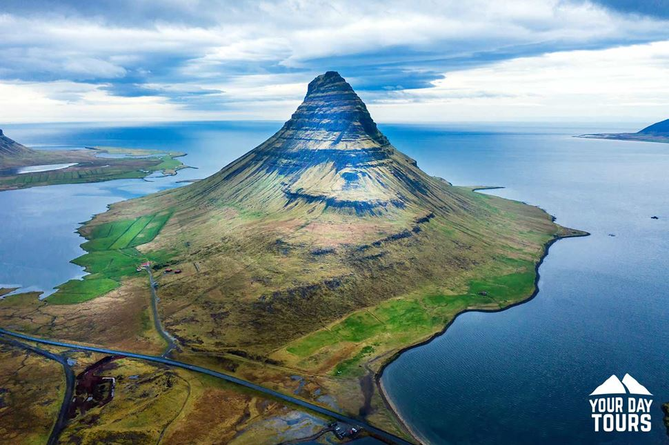
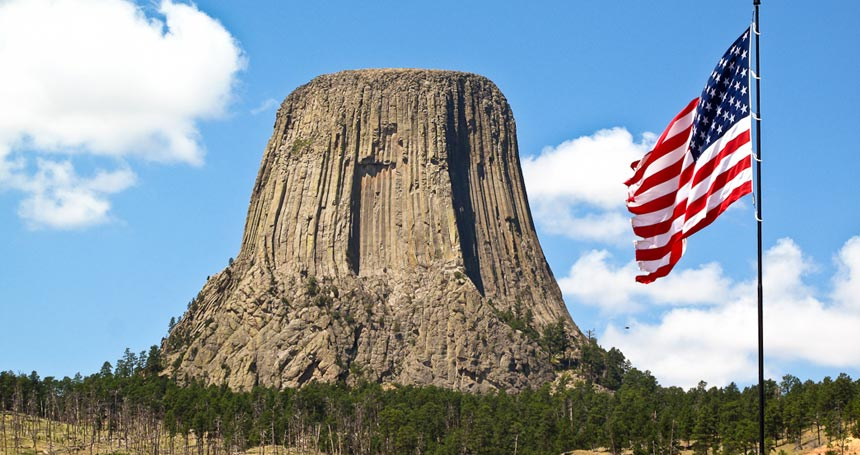

Hagia Sophia (Turkey)
Hagia Sophia in Istanbul, Turkey, is an iconic architectural masterpiece. Originally a church, later a mosque, and now a museum, it perfectly blends Byzantine and Ottoman styles. Its massive central dome and intricate

Giant’s Causeway (Northern Ireland)
Giant’s Causeway in Northern Ireland is a natural wonder made up of thousands of interlocking basalt columns. Formed by ancient volcanic activity, its unique geometric shapes create a striking, otherworldly landscape.

Devils Tower (USA)
Devils Tower in Wyoming, USA, is a towering monolithic rock formation rising dramatically from the plains. Formed millions of years ago by volcanic activity, it features striking vertical columns and rugged textures.

Atomium (Belgium)
The Atomium in Brussels, Belgium, is a striking architectural landmark shaped like a magnified iron crystal. Built for the 1958 World Expo, its interconnected spheres and tubes offer panoramic views of the city.